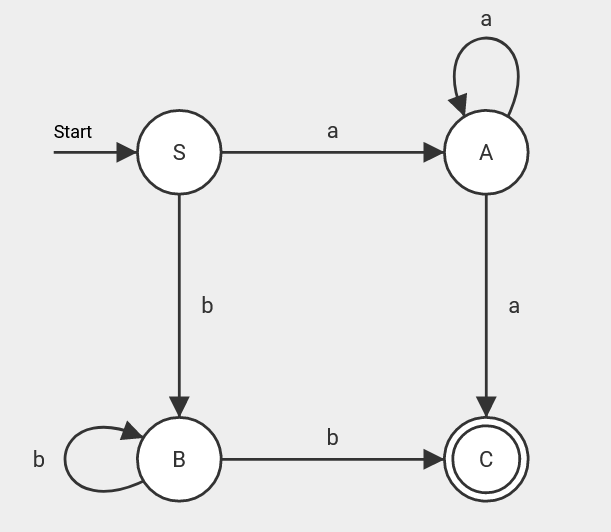
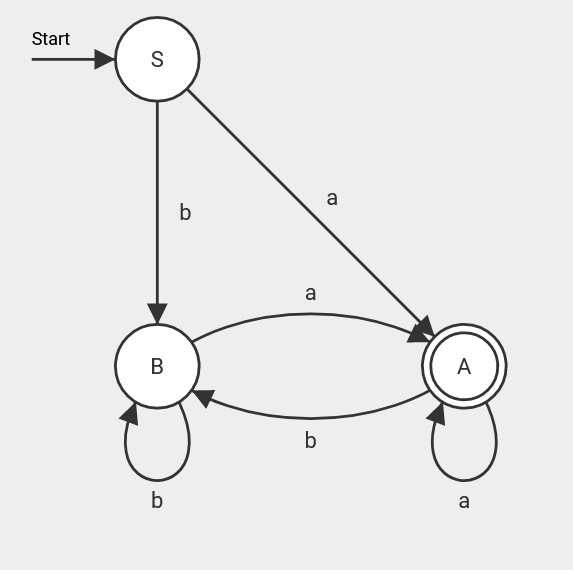

In der Theorie der formalen Sprachen gibt es eine enge Verbindung zwischen regulären Grammatiken und endlichen Automaten. Beide beschreiben genau die regulären Sprachen. In diesem Kapitel lernst du, wie man zwischen diesen beiden Darstellungsformen wechseln kann.
1. Von der regulären Grammatik zum endlichen Automaten
Um eine reguläre Grammatik (Regeln A → aB, A → a, ggf. S → ε) in einen endlichen Automaten zu überführen, gehst du wie folgt vor:
Jedes Nichtterminal der Grammatik wird zu einem Zustand des Automaten.
Zusätzlich wird ein neuer Zustand E angelegt, der Endzustand wird.
Das Startsymbol der Grammatik wird zum Startzustand des Automaten.
Für jede Regel A → aB entsteht ein Übergang von A nach B mit der Beschriftung a.
Für jede Regel A → a entsteht ein Übergang von A in den neuen Endzustand E mit der Beschriftung a.
Gibt es die Regel S → ε, wird auch der Startzustand S zum Endzustand.
Das Ergebnis ist im Allgemeinen ein NEA (z. B. bei A → aA | a). Mit der Potenzmengenkonstruktion (Kapitel 6.10) erhältst du daraus einen DEA.
Hinweis: ε-Variante
Lässt man – wie FLACI und viele Schulbücher – Regeln A → ε für beliebige Nichtterminale zu, wird jedes Nichtterminal A mit einer Regel A → ε zum Endzustand. Der zusätzliche Zustand E ist dann nur für Regeln A → a nötig.
Beispiel 1 einfach
Ausgangssituation: Die reguläre Grammatik G mit den Produktionsregeln
S → aA | bB
A → aA | a
B → bB | b
erzeugt die Wörter aa, aaa, …, bb, bbb, … Der zugehörige Automat hat die Zustände S, A, B und den neuen Endzustand C (= E):

Abb. 1: Endlicher Automat für die Grammatik G (A → a wird zu A –a→ C, B → b zu B –b→ C)
Der Automat ist ein NEA: In A führt a sowohl nach A als auch nach C.
Zustände anlegen: S (Start), A, B und der neue Endzustand C. Warum? Jedes Nichtterminal steht für „so viel ist schon erzeugt, so geht es weiter“.
Regeln A → aB übersetzen: S → aA wird S –a→ A, S → bB wird S –b→ B, A → aA wird A –a→ A, B → bB wird B –b→ B.
Regeln A → a übersetzen: A → a wird A –a→ C, B → b wird B –b→ C. Warum? Mit diesen Regeln endet die Ableitung, also muss der Automat danach akzeptieren können.
ε prüfen: Es gibt keine Regel S → ε, also ist S kein Endzustand.
δ
a
b
→ S
{A}
{B}
A
{A, C}
∅
B
∅
{B, C}
C (Endzustand)
∅
∅
Ergebnis: NEA mit vier Zuständen, der genau die Wörter aa, aaa, … und bb, bbb, … akzeptiert.
Kontrolle: Ableitung S ⇒ aA ⇒ aaA ⇒ aaa entspricht dem Weg S –a→ A –a→ A –a→ C. Mit Zustandsmengen: {S} –a→ {A} –a→ {A, C} –a→ {A, C} ✓. Dagegen ab: {S} –a→ {A} –b→ ∅ ✗ – auch in G nicht ableitbar.
2. Vom endlichen Automaten zur regulären Grammatik
Die Umkehrung, also die Überführung eines endlichen Automaten in eine reguläre Grammatik, funktioniert ähnlich:
Jeder Zustand des Automaten wird zu einem Nichtterminal der Grammatik, der Startzustand zum Startsymbol. (Ein Fangzustand wird weggelassen.)
Für jeden Übergang q –a→ p entsteht die Regel q → a p.
Ist p ein Endzustand, entsteht zusätzlich die Regel q → a (die Ableitung darf hier enden).
Ist der Startzustand ein Endzustand (ε wird akzeptiert), kommt S → ε hinzu. Führen Pfeile in den Startzustand zurück, braucht man dafür ein neues Startsymbol S', das dieselben Regeln wie der Startzustand und zusätzlich S' → ε erhält – denn S → ε ist nur erlaubt, wenn S auf keiner rechten Seite vorkommt.
Beispiel 2 komplex
Ausgangssituation: DEA für „gerade Anzahl von a“ über {a, b} (Kapitel 6.7, Aufgabe 6.7.7): q0 (Start- und Endzustand) –a→ q1, q0 –b→ q0, q1 –a→ q0, q1 –b→ q1.
q0 → a q1 | b q0 | b
q1 → a q0 | a | b q1
S' → a q1 | b q0 | b | ε (neues Startsymbol, weil q0 Endzustand ist und Pfeile nach q0 führen)
Ableitung von aba: S' ⇒ a q1 ⇒ ab q1 ⇒ aba
Übergänge in Regeln übersetzen: q0 –a→ q1 wird q0 → a q1, q0 –b→ q0 wird q0 → b q0, q1 –a→ q0 wird q1 → a q0, q1 –b→ q1 wird q1 → b q1.
Übergänge in den Endzustand ergänzen: Nach q0 führen q0 –b→ q0 und q1 –a→ q0. Daraus entstehen q0 → b und q1 → a. Warum? Nach diesen Zeichen darf das Wort enden.
Leeres Wort behandeln – die Falle: q0 ist Start- und Endzustand, also gehört ε zur Sprache. Die Regel q0 → ε ist aber nicht erlaubt, weil q0 auf rechten Seiten vorkommt (q0 → b q0, q1 → a q0). Lösung: neues Startsymbol S' mit allen Regeln von q0 und zusätzlich S' → ε.
Typ prüfen: Alle Regeln haben die Form A → aB oder A → a, nur S' → ε ist die erlaubte Ausnahme, und S' steht auf keiner rechten Seite.
Ergebnis: Die Grammatik mit Startsymbol S' und den drei Regelzeilen oben ist streng regulär (Typ 3).
Kontrolle:bb: S' ⇒ b q0 ⇒ bb ✓ (0 a). a: S' ⇒ a q1 – für q1 gibt es keine Regel, die ohne weiteres Zeichen endet; a ist nicht ableitbar ✓ (1 a). ε: S' ⇒ ε ✓.
Hinweis: Äquivalenz prüfen
Bei der Überführung in beide Richtungen muss die beschriebene Sprache gleich bleiben. Prüfe deshalb einige kurze Wörter – auch das leere Wort – in beiden Darstellungen.
Praxisbezug: Von der Spezifikation zum Programm
Alltag: Die Regeln für eine gültige Kfz-Kennzeichen- oder Kundennummer stehen oft als Grammatik oder Muster in einer Spezifikation. Im Programm, z. B. beim Scannen eines Tickets an der Kasse, arbeitet ein Automat, der Zeichen für Zeichen prüft.
Beruf: Softwareentwickler übersetzen Formatvorgaben aus Normen in Prüfautomaten; Werkzeuge wie FLACI oder JFLAP (Lehre) und Lexer-Generatoren (Industrie) übernehmen die Umwandlung automatisch. In der Protokollentwicklung wird die zulässige Nachrichtenfolge als Grammatik beschrieben und in der Firmware eines Geräts als Zustandsautomat umgesetzt.
3. Aufgaben
Die Fähigkeit, zwischen diesen beiden Darstellungsformen zu wechseln, ist in der theoretischen Informatik von großer Bedeutung. Sie ermöglicht es, je nach Problemstellung die geeignetere Darstellung zu wählen: Grammatiken zum Beschreiben und Erzeugen, Automaten zum Prüfen.
Das Wichtigste
Grammatik → Automat: Die Nichtterminale entsprechen den Zuständen, jede Produktionsregel wird zu einem Übergang. Regeln A → a, die eine Ableitung beenden, führen in einen neuen Endzustand.
Automat → Grammatik: Jeder Übergang q –a→ p wird zur Regel q → a p. Führt er in einen Endzustand, kommt q → a hinzu.
Ergebnis: Es entstehen nur Regeln der Form A → aB und A → a – die Grammatik ist regulär (Typ 3).
Grundaufgaben
Aufgabe 6.11.1: AFB I/II
Gegeben sei folgender endlicher Automat:

Abb. 2: Endlicher Automat
Überführe diesen Automaten in eine äquivalente reguläre Grammatik.
Aufgabe 6.11.2: AFB II
Gegeben ist die reguläre Grammatik G mit S → aS | bA, A → bA | b.
Konstruiere den zugehörigen endlichen Automaten.
Begründe, ob der Automat deterministisch ist.
Beschreibe die Sprache in Worten und als regulären Ausdruck.